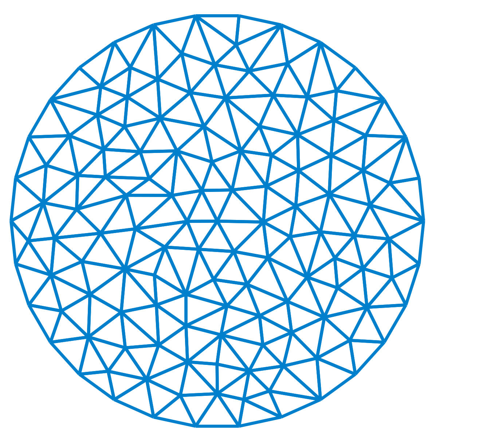

Ma contribution
Comme je l’expliquais précédemment, mon objectif est de développer une méthode pour résoudre des Équations aux Dérivées Partielles (EDP) le plus rapidement possible, méthode qui va combiner deux types de méthodes déjà connues : les méthodes appelées FEM (pour Finites Elemnts Methods) et des approches avec des réseaux de neurones (méthodes plus récentes dans le domaine de l’Intelligence Artificielle).

Figure 1. Maillage d’un cercle en 2D.
|
Pour être plus précis, une des méthodes classiques pour résoudre les EDP, c’est-à-dire pour trouver la solution au problème considéré, est d’utiliser ce qu’on appelle des Méthodes Éléments Finis. Pour faire très simple, si notre organe est représenté par un cercle en 2D, résoudre l’équation va se ramener à résoudre le problème en un nombre fini de points. Pour cela, on va introduire ce que l’on appelle un maillage du domaine (ici, un ensemble de triangles) et on va résoudre numériquement l’équation en un nombre de points finis (par exemple, les nœuds du maillage, c’est-à-dire les sommets de tous les triangles). |
Ce type de méthode a en fait plusieurs limitations très importantes.
-
Comme vous devez vous en douter, en pratique le foie n’est pas représenté par un cercle, ce qui rend les choses plus compliquées. En fait, générer un maillage précis d’une géométrie aussi complexe qu’un organe comme le foie en 3D peut être très coûteux, notamment prendre beaucoup de temps, ce qui rend pas ce type de méthodes difficilement utilisables en temps réel.
-
Un autre point important est que la géométrie du foie reste similaire entre différents patients, mais elle ne sera jamais identique. Comme les mains de chaque personne, les organes de celle-ci ne seront pas exactement les mêmes. Ainsi, on doit générer des maillages de l’organe pour chaque nouveau patient et c’est ainsi qu’on a vu apparaître de nouvelles méthodes, dites inter-patients. Ces méthodes ont pour objectif entre-autre de trouver une solution, disons générique, qui devra être améliorée ensuite pour s’adapter au cas par cas. Autrement dit, comme les foies de chaque patient se ressemblent, on cherche à prédire une solution pas obligatoirement très précise qui pourra être utilisé pour tous les patients et on souhaiteras l’améliorer ensuite pour un patient donné.
De ce fait, de nouvelles méthodes ont vue le jour, notamment avec l’apparition des réseaux de neurones, qui peuvent être des outils très rapides pour résoudre ce type de problème. Mais ces méthodes, qui sont applicables cette fois-ci en temps réel, peuvent produire des solutions qui ne sont pas suffisamment précises et/ou même encore se tromper complètement. |
Ma contribution là-dedans va être de combiner ces deux types de méthodes pour obtenir une solution rapide, précise et inter-patients. On commence alors par récupérer la solution prédite par un réseau de neurones, puis on utilise une méthode type Éléments finis pour corriger et certifier la solution, c’est-à-dire l’améliorer en la rendant plus précise et faire en sorte qu’elle soit correcte partout.